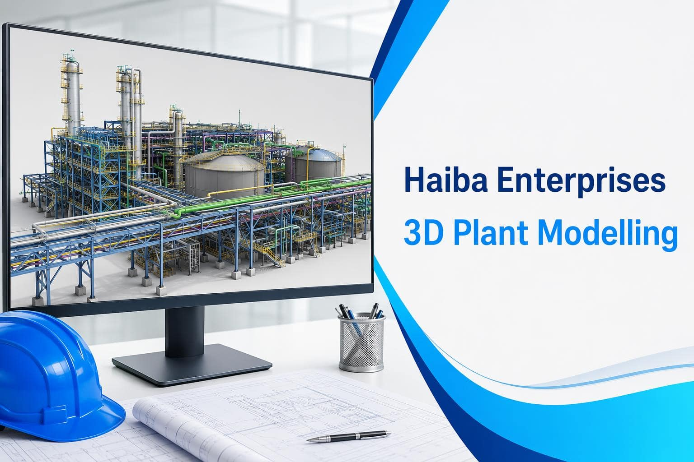

01
Define
Confirm the model purpose, required inputs, level of detail, and review audience.
Design and Engineering
Plant 3D modelling can help project teams coordinate equipment, structural interfaces, and design decisions before they reach the field.

Applications
01
Confirm the model purpose, required inputs, level of detail, and review audience.
02
Build coordinated equipment and structural information around the agreed scope.
03
Use the model to identify interfaces, communicate options, and support decisions.
Tell us what equipment, structure, or project interface needs clearer visibility.
Talk to HaibaDigital plant coordination
3D plant modelling gives engineering and project teams a clearer way to coordinate equipment, piping, structures, access, and maintenance space. A useful model is more than a visual output: it is a shared reference for review and communication.
Haiba supports modelling activities for new projects, plant modifications, brownfield coordination, and design reviews where spatial understanding can reduce uncertainty.
01 | Collect
We organize available drawings, equipment data, point clouds, surveys, and design inputs.
02 | Model
We build and coordinate the relevant model scope with attention to interfaces and review priorities.
03 | Review
We use model reviews to expose clashes, access concerns, and coordination decisions early.
Digital plant coordination
3D plant modelling gives engineering and project teams a clearer way to coordinate equipment, piping, structures, access, and maintenance space. A useful model is more than a visual output: it is a shared reference for review and communication.
Haiba supports modelling for new projects, plant modifications, brownfield coordination, and design reviews where spatial understanding can reduce uncertainty.
01 | Collect
Organize drawings, equipment data, surveys, and design inputs.
02 | Model
Build and coordinate the relevant model scope with attention to interfaces.
03 | Review
Expose clashes, access concerns, and coordination decisions early.